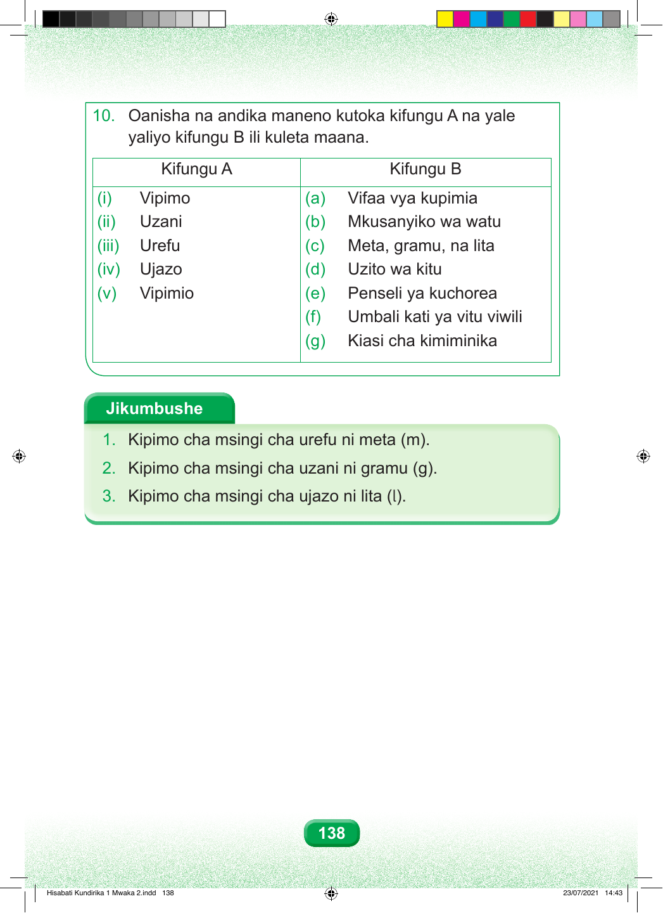

10. Oanisha na andika maneno kutoka kifungu A na yale yaliyo kifungu B ili kuleta maana. Kifungu A Kifungu B (i) Vipimo (a) Vifaa vya kupimia (ii) Uzani (b) Mkusanyiko wa watu (iii) Urefu (c) Meta, gramu, na lita (iv) Ujazo (d) Uzito wa kitu (v) Vipimio (e) Penseli ya kuchorea (f) Umbali kati ya vitu viwili (g) Kiasi cha kimiminika Jikumbushe 1. Kipimo cha msingi cha urefu ni meta (m). 2. Kipimo cha msingi cha uzani ni gramu (g). 3. Kipimo cha msingi cha ujazo ni lita (l). 138 Hisabati Kundirika 1 Mwaka 2.indd 138 23/07/2021 14:43